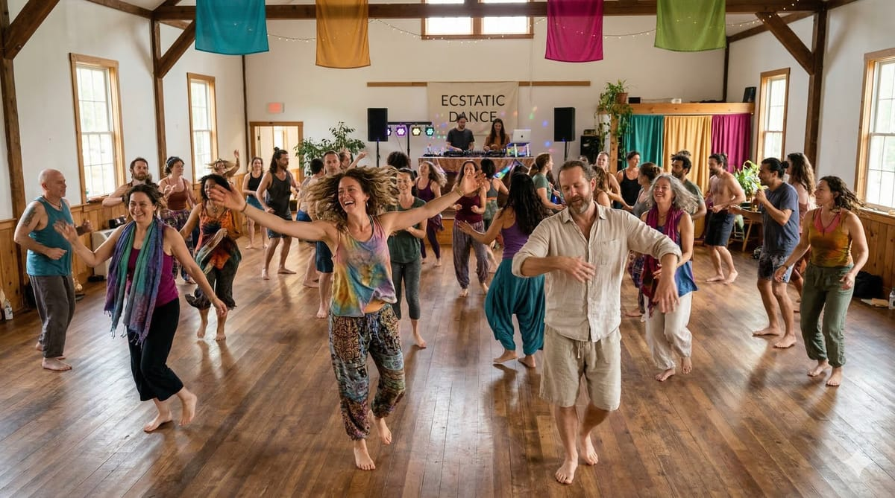
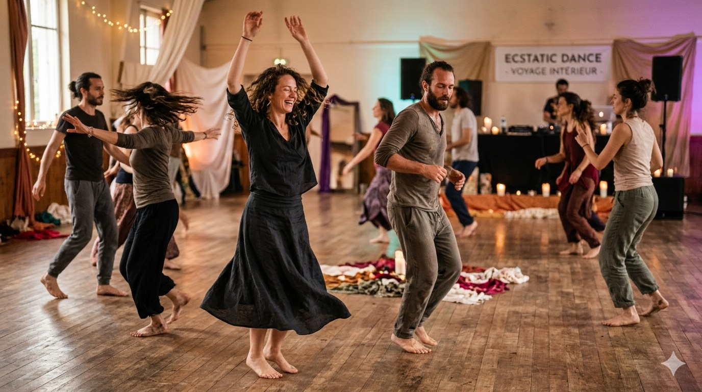
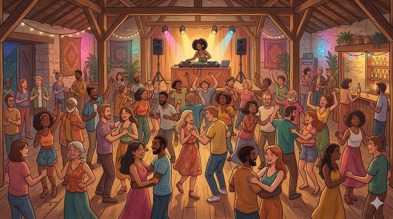
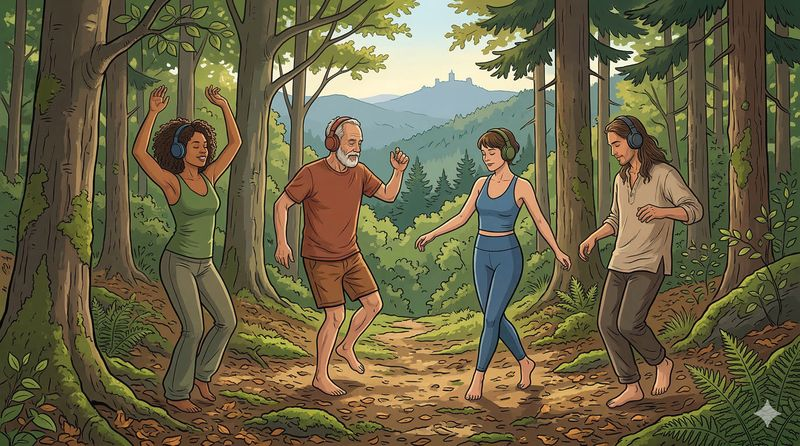

Qu'est-ce que l'Ecstatic Dance ?
Une pratique de mouvement libre guidée par la musique, où chacun·e peut s'exprimer sans jugement ni chorégraphie imposée.
DécouvrirAucun pas à apprendre, aucune bonne ou mauvaise façon de bouger. Tu arrives, tu écoutes, tu laisses ton corps répondre à la musique.
C'est à la fois une pratique individuelle et collective. Individuelle parce que chaque mouvement est le tien — une exploration de tes émotions, de ta présence, de ton rapport au corps. Collective parce que l'espace est partagé : les sons deviennent des guides, et la piste de danse se transforme en une toile vivante où les récits de chacun·e se tissent ensemble .

Au cœur de chaque session, il y a un·e DJ. Un·e guide musical·e dont le rôle va bien au-delà de la performance technique. Là où le DJing de club cherche l'énergie, la montée, l'effet — le DJing de mouvement libre propose avec finesse le voyage, la profondeur, la juste présence. Une pratique qui demande une connaissance de soi, une capacité à sentir l'espace et les corps, à lire ce qui se passe au-delà de la musique.
C'est une pratique holistique, qui place le·la DJ dans une posture de facilitation, de présence et d'écoute consciente. Une responsabilité réelle — celle de co-créer et soutenir un espace sûr où le mouvement libre peut pleinement exister. Il y a pour moi une nécessité de finesse, de soin indispensable.
Un mouvement mondial
La danse libre traverse les cultures et les époques. Communautés et traditions du monde entier la pratiquent depuis toujours, lors de rassemblements, de cérémonies et de rituels. Le terme "Ecstatic Dance" tel qu'on le connaît aujourd'hui a été formalisé au début des années 2000, et depuis, le mouvement n'a cessé de se répandre à travers le monde.
Des sessions ont lieu aujourd'hui sur tous les continents — en salle, en pleine nature, en festival, en retraite. Chaque communauté locale s'approprie le format tout en s'appuyant sur un socle de valeurs communes.
Deux expressions d'un même élan
L'Ecstatic Dance se décline aujourd'hui sous des formes variées. Deux grandes orientations méritent d'être distinguées.

Ecstatic Dance
Soutenu par une ou plusieurs vagues musicales, l'espace permet d'accueillir toutes les émotions et tous les processus intérieurs. Le cadre est exigeant pour celles et ceux qui le portent, et plus sécurisant pour les participant·es. La musique, très variée, invite à traverser un large spectre d'états pour permettre un véritable voyage de soi.

Clubbing conscient
Une proposition festive et accessible, dans un cadre plus flexible. La musique y est moins variée, portée davantage vers la célébration que vers le voyage intérieur, et peut s'affranchir d'une structure de vague. Un espace de joie et de célébration collective.
Ces deux formes sont justes, chacune à sa façon. Ce qui compte, c'est de nommer cette intention clairement — un soin envers celles et ceux qui viennent. J'apprécie la créativité sous toutes ces formes, à partir du moment où elle est claire et fidèle à l'intention qui la porte.
Au-delà de ces deux orientations, l'Ecstatic Dance a essaimé en une multitude de formes hybrides — Silent Ecstatic Dance, Fiestatic, Forestatic, Funkystatic, Solstatic, Beachstatic, Nakedstatic... Chaque variation puise dans l'essence du mouvement libre pour l'habiller d'un contexte, d'une atmosphère, d'un terrain particulier. La créativité des communautés ne cesse d'en inventer de nouvelles.
Pour les sessions qui s'inscrivent dans cette profondeur de voyage — celles qui sont considérées par beaucoup comme originelles — j'ai choisi en 2025 de les qualifier d'Ecstatic Dance Intégrative . Une façon de nommer un soin particulier : celui qui commence bien avant la publication de l'événement, et se prolonge bien après sa clôture.
Les 8 principes fondamentaux
Chaque session d'Ecstatic Dance repose sur un cadre simple. Ces principes créent l'espace de sécurité et de liberté qui rend l'expérience possible. Ils varient légèrement d'une communauté à l'autre, mais le socle reste le même.
Sans paroles
Les mots se mettent en retrait, le corps prend le relais. Ce silence est ce qui protège et approfondit le voyage de chacun·e.
Pieds nus
Sentir le sol sous les pieds, activer tous les organes et laisser le corps se connecter pleinement à ce qui le porte.
Pas de substances
Venir pleinement conscient·e, présent·e à ce qui est — ici et maintenant. Ni alcool, ni drogues. L'expérience n'en a pas besoin.
Sans jugement
Danser davantage, c'est penser moins. Penser moins, c'est se laisser tranquille — soi et les autres.
Consentement
Si ce n'est pas un oui clair, c'est un non. Avant tout contact, demander. L'espace de chacun·e est sacré.
Téléphone éteint
Pas de photos, pas de vidéos dans l'espace de danse. Ce qui se vit ici reste ici.
Communauté
L'espace est sacré. La présence, l'intention et l'écoute de chacun·e en sont les gardien·nes.
Être soi
Rien à jouer, rien à prouver. Juste être. Simplicité.
Déroulé d'une session type
Chaque session est unique, mais la plupart suivent une structure similaire. Ce cadre permet au voyage de se déployer progressivement — de l'arrivée calme jusqu'à l'intensité de la danse, puis le retour au silence.
Arrivée
Un sas de transition entre le monde extérieur et l'espace de danse. On dépose ses affaires, on retire ses chaussures, on prend le temps de se poser. On fait du lien à soi, au sol, aux autres.
Cercle d'ouverture
Le·la facilitateur·ice réunit le groupe. On rappelle les principes et le cadre. C'est le moment où l'espace commun se co-crée.
Mise en mouvement
Étirements, respiration, mouvement lent pour se reconnecter au corps. Le mental commence à se mettre en retrait, laissant place aux jeux et aux dynamiques collectives.
Voyage musical 1h30 à 2h
Le·la DJ ou un·e musicien·ne live guide l'énergie du groupe à travers les phases naturelles du voyage : éveil, intensité, relâchement.
Intégration
Silence et sons organiques. Le corps se repose, le voyage continue en douceur.
Cercle de clôture
Le groupe se retrouve pour clore l'espace ensemble. Parfois en silence, parfois avec des mots. On accueille ce qui s'est vécu.
Après le cercle, selon les communautés, l'espace se prolonge naturellement : rangement, échanges, nourriture partagée, liens qui se tissent.
Silent Ecstatic Dance
Une variante où les participant·es portent des casques audio sans fil (HF). Souvent en plein air, connecté·e aux éléments et à la nature — ce qui ouvre des possibilités uniques.

Le concept
Danser en pleine nature, pieds dans l'herbe ou le sable, face à un panorama de montagne ou au bord d'une cascade, avec une portée de plusieurs centaines de mètres autour du point d'émission. De l'extérieur, on voit des corps danser en silence. De l'intérieur, c'est un voyage musical intime et immersif, amplifié par l'environnement naturel.
Les formats
- DJ set en live sur batterie.
- Session pré-enregistrée.
Aussi nommée SilentStatic — l'expérience devient accessible là où le son amplifié serait impossible ou inadapté. Elle ouvre aussi une dimension d'intimité singulière avec la nature, chacun·e dans sa propre bulle sonore.
Écoute un voyage musical
Depuis plusieurs années, Ëotim crée des voyages musicaux uniques pour des sessions d'Ecstatic Dance et des festivals, en tant qu'organisateur, facilitateur et DJ, il est invité dans de nombreuses communautés.
Et si tu guidais le voyage ?
Derrière chaque événement de danse libre, plusieurs rôles entrent en jeu : DJ, facilitateur·ice, organisateur·ice — autant de présences qui tiennent l'espace. Des rôles exigeants, subtils, vivants — qui s'apprennent par transmission et par l'expérience. Si tu as envie de créer ou d'approfondir de tels espaces, la formation DJing Is A Medicine et le cycle d'exploration D.A.N.S.E.S 48 sont faits pour ça.